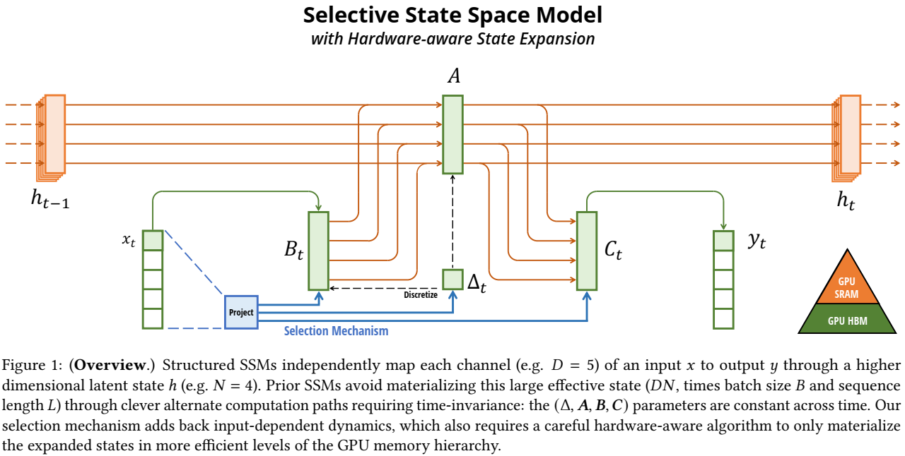
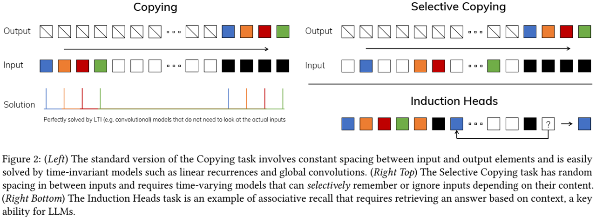
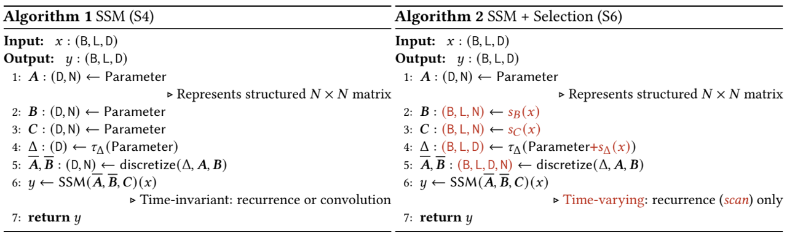
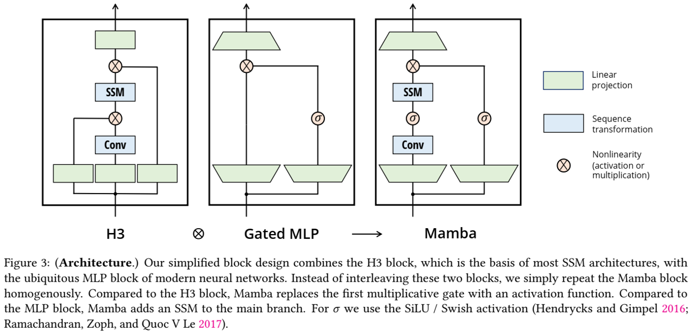

论文阅读三十七：Mamba：具有选择性状态空间的线性时间序列建模
摘要
基础模型现在为深度学习中大多数令人兴奋的应用程序提供动力，几乎普遍基于Transformer架构及其核心注意力模块。许多次平方时间的架构，如线性注意力、门控卷积和循环模型，以及结构化状态空间模型（SSMs）已经开发用于解决Transformer在长序列中计算低效，但它们在诸如语言的重要模态中，没有注意力表现得好。我们认为这种模型关键的弱点在于它们不能稳定低执行基于上下文的推理，并做出若干改进。首先，简单让SSM参数成为输入的函数解决它们处理离散模态的弱点，允许模型沿着序列长度维度选择性地传播或遗忘依赖于当前标记的信息。第二，虽然这种改变防止了高效卷积的使用，我们设计一种在循环模式中的硬件感知并行算法。我们集成这些选择性SSMs到简化的端到端的没有注意力，甚至没有MLP模块的神经网络架构（Mamba）。Mamba具有快速推理（比Transformers高5倍的吞吐量）和序列长度的线性缩放，其性能在高达百万个长度序列的真实数据上有所提高。作为通用序列模型骨干，Mamba在语言、音频和基因组学等多种模态下实现了最先进的性能。在语言建模方面，我们的Mamba-3B模型在预训练和下游评估方面都优于相同大小的Transformers，并与两倍于其大小的Transformer相匹配。 论文地址
引言
基础模型（FMs），或在海量数据上预训练然后适应下游任务的大型模型，已成为现代机器学习中的一种有效范式。这些FMs的骨干通常是序列模型，在来自各种领域的任意输入序列上操作，如语言、图像、语音、音频、时间序列和基因组学（Brown等人2020；Dosovitskiy等人2020；Ismail Fawaz等人2019；Oord等人2016；Poli等人2023；Sutskever、Vinyals和Quoc V Le 2014）。虽然这个概念与特定的模型架构选择无关，现代FMs主要基于单一类型的序列模型：Transformer（Vaswani等，2017）及其核心注意力层（Bahdanau,chao and Bengio 2015）。自注意力的有效性归因于其在上下文窗口内密集地路由信息的能力，使其能够建模复杂数据。然而，这种特性带来根本性缺陷：无法对有限窗口之外的任何事物进行建模，以及相对于窗口长度的二次缩放。已经出现大量关于更加高效的注意力变体的研究，来解决这些缺陷（Tay,Dehghani，Bahri等，2022），但往往以牺牲使其有效的特性为代价。到目前为止，这些变体都没有被证明在跨领域的规模上是有效的。
最近，结构化状态空间序列模型（SSMs）(Gu等，2022；Gu等，2021)已成为序列建模的一类有前景的架构。这些模型可以被解释为循环神经网络（RNNs）和卷积神经网络(CNNs)的组合，受经典的状态空间模型（Kalman 1960）的启发。这类模型可以非常有效地计算为递归或卷积，序列长度可以线性或接近线性缩放。此外，它们具有原则性机制来建模特定数据模态的长范围依赖(Gu等，2020)，并且已经主导了Long Rnage Arena（Tay等，2021）等基准测试。许多类型的SSM（Gu、Goel和Ré2022；Gu、Gupta等人2022；Gupta、Gu和Berant 2022；Y.Li等人2023；Ma等人2023；Orvieto等人2023；Smith、Warrington和Linderman 2023）在涉及音频和视觉等连续信号数据的领域取得了成功（Goel等人2022；Nguyen、Goel等人，2022；Saon、Gupta和Cui 2023）。然而，它们在建模离散和信息密集的数据（如文本）方面效果较差。
我们提出一类新的选择性状态空间模型，改进了先前工作中的若干方面来获得Transformers的建模能力，同时在序列长度中线性缩放。
选择机制。首先，我们识别先前模型的关键限制：以输入依赖的方式有效选择数据的能力（即，侧重或忽略特定输入）。构建在基于诸如选择性复制和感应头等重要合成任务的直觉之上，我们通过基于输入参数化SSM参数设计一个简单的选择机制。这允许模型过滤不相干信息，并无限期记住相关信息。
硬件感知算法。这种简单变化对于模型的计算提出技术挑战；事实上，所有先前的SSMs模型必须时间和输入不变的，从而高效计算。我们使用硬件感知算法来解决这个问题，它使用扫描而不是卷积来循环地计算模型，但不会实体化扩展状态，以避免GPU内存层次结构不同级别之间的IO访问。最终的实现在理论上（与所有基于卷积的SSM的伪线性相比，序列长度的线性缩放）和现代硬件上（在A100 GPU上快3倍）都比以前的方法快。
架构。 我们通过组合先前SSM架构的设计（Dao等，2023）和Transformers的MLP模块到单一模块来简化先前深度序列模型架构，这导致了一种简单而同质的架构设计（Mamba），其中包含了选择性的状态空间。
选择性SSMs，及其扩展的Mamba架构，是具有使得它们适合作为序列上操作的通用基础模型的骨干的全循环模型。（i）高质量：选择性带来在诸如语言和基因学等密集模态的强大性能。（ii）快速训练和推理：训练过程中，计算和内存在序列长度上线性缩放，并且在推理过程中，自回归地展开模型，每步仅需常量时间，由于它不需要先前元素的缓存。（iii）长上下文：质量和效率一起产生在序列长度达到1M的真实数据上的性能改进。
我们在几种类型的模式和设置下，在预训练质量和特定领域的任务表现方面，实证验证了Mamba作为一般序列FM骨干的潜力：
- 合成 。在重要的合成任务上，如复制和归纳头，这些任务被认为是大型语言模型的关键，Mamba不仅很容易解决这些问题，而且可以无限长（>1M标记）地推断出解决方案。
- 音频和基因学。Mamba在建模音频波形和DNA序列方面，无论是在预训练质量还是下游指标方面，都超越了SaShiMi、Hyena和Transformers等先前最先进的模型（例如，将具有挑战性的语音生成数据集上的FID减少了一半以上）。在这两种设置中，它的性能随着上下文长度的增加而提高，序列长度可达数百万。
- 语言建模。Mamba是第一个在预训练困惑和下游评估中真正实现Transformer质量性能的线性时间序列模型。通过将缩放定律扩展到1B参数，我们发现Mamba超过了大量基线的性能，包括基于LLaMa的非常强大的现代Transformer训练方案（Touvron等人，2023）。与类似大小的Transformer相比，我们的Mamba语言模型具有5倍的生成吞吐量，Mamba-3B的质量与两倍大小的Transformers相当（例如，与Pythia-3B相比，常识推理的平均值高出4分，甚至超过了Pythia-7B）。
模型代码和预训练检查点开源在： https://github.com/state-spaces/mamba 。
状态空间模型
结构化状态空间序列模型（S4）是最近的一类用于深度学习的序列模型，它与RNNs，和CNNs，以及经典状态空间模型联系广泛。它们的灵感来自一个特殊的连续系统（1），通过隐式潜在状态 映射1维函数或序列 。

具体地，S4模型由4个参数 来定义，定义了两阶段的序列到序列的变换。
离散化。第一阶段变换“连续参数“ 到”离散参数“ ，通过固定公式 和 ，其中 对被称为离散规则。可以使用各种规则，如方程（4）中定义的零阶保持（ZOH）。
离散化与连续时间系统具有深度联系，可以赋予它们额外特性，如分辨率不变性（Nguyen等，2022）和自动确保模型适当归一化（Gu等，2023；Orvieto等，2023）。它还与RNNs的门控机制有联系（Gu等，2020；Tallec等，2018），我们将在章节3.5中再次讨论。然而，从机械观点来看，离散化可以简单视作SSM的前向传递中计算图的第一步。SSMs候选类型可以跳过离散步，并直接参数化 （Zhang等，2023），这可能更容易推理。
计算。参数变换从 后，模型可以以两种方式计算，作为线性循环（2）或全局卷积（3）。
通常，模型使用卷积模式（3）来高效并行化训练（其中整个输入序列可以提前看到），并转换到循环模式（2）进行高效自回归推理（其中，输入每次只显示一个时间步）。
线性时不变（LTI）。方程（1）到（3）的一个重要特性是模型的动态随时间恒定。换句话说， ，以及 ，对于所有时间步是固定的。盖特性成为线性时不变（LTI），与循环和卷积深度联系。非正式地，我们认为 LTI SSMs等价于任意线性循环（2a）或卷积（3b），并使用LTI作为这类模型的总称。
到目前为止，由于第3.3节中讨论的基本效率约束，所有结构化SSM都是LTI（例如计算为卷积）。然而，这项工作的核心观点是LTI模型在建模模型类型的数据中具有根本性的限制，且我们的技术贡献涉及移除LTI约束，同时解决效率瓶颈。
结构和维度 。最后，我们注意到结构化SSMs之所以如此命名，因为高效计算它们还需要在A矩阵上强加结构。最流行的结构形式是对角（Gu，Gupta等人，2022；Gupta，Gu和Berant，2022；Smith，Warrington和Linderman，2023），我们也使用它。
此时， 矩阵全都可以由N个数字来表示。为了在批量大小为B，长度为L，具有D通道的输入序列x上操作，SSM独立应用到每个通道。请注意，这种情况下，每个输入的总隐藏状态的维度为DN，并且在序列长度上计算它们需要 时间和内存；这是第3.3节中提到的根本效率瓶颈的根源。
通用状态空间模型。 我们注意到，状态空间模型这一术语具有非常广泛的含义，它简单地表示了任何具有潜在状态的循环过程的概念。它已被用来指代不同学科中的许多不同概念，包括马尔可夫决策过程（MDP）（强化学习（Hafner等人，2020））、动态因果建模（DCM）（计算神经科学（Friston，Harrison和Penny 2003））、卡尔曼滤波器（控制（Kalman 1960））、隐马尔可夫模型（HMM）和线性动力系统（LDS）（机器学习），以及一般的递归（有时是卷积）模型（深度学习）。
在整篇论文中，我们使用“SSM”一词专门指代结构化SSM或S4模型（Gu、Goel和Ré2022；Gu、Gupta等人2022；Gupta、Gu和Berant 2022；Hasani等人2023；Ma等人2023；Smith、Warrington和Linderman 2023），并且可以互换使用这些术语。为了方便起见，我们还可以包括这些模型的衍生物，例如那些关注线性递归或全局卷积观点的模型（Y.Li等人，2023；Orvieto等人，2023），并在必要时澄清细微差别。
SSM架构。 SSM是独立的序列变换，可以整合到端到端的神经网络架构中。（我们有时也称SSM架构为SSNN，它是SSM层，就像CNN是线性卷积层一样。）我们讨论了一些最著名的SSM架构，其中许多也将作为我们的主要基线。
-
线性注意（Katharopoulos等人，2020）是自我注意的近似，涉及一种可被视为退化线性SSM的递归。
-
H3（Dao，Fu，Saab等人，2023）将这种循环推广到使用S4；它可以被视为一种架构，其中SSM被两个门控连接夹在中间（图3）。H3还在主SSM层之前插入一个标准的局部卷积，将其框定为移位SSM。
-
Hyena（Poli等人，2023）使用与H3相同的架构，但用MLP参数化全局卷积替换了S4层（Romero等人，2021）。
-
RetNet（Y.Sun等人，2023）为架构增加了一个额外的门，并使用了一个更简单的SSM，允许使用多头注意力（MHA）的变体而不是卷积来实现另一种可并行计算路径。
-
RWKV（B.Peng等人，2023）是最近为基于另一种线性注意力近似的语言建模而设计的RNN，即无注意力Transformer（S.Zhai等人，2021）。其主要的“WKV”机制涉及LTI循环，可以看作是两个SSM的比率。
其他密切相关的SSM和架构将在扩展的相关工作中进一步讨论（附录B）。我们特别强调S5（Smith、Warrington和Linderman 2023）、QRNN（Bradbury等人，2016）和SRU（Lei等人，2017），我们认为它们是与我们的核心选择性SSM最密切相关的方法。
选择性状态空间模型
我们使用合成任务的直觉来激励我们的选择机制（第3.1节），然后解释如何将这种机制纳入状态空间模型（第3.2节）。由此产生的时变SSM不能使用卷积，这就提出了如何高效计算它们的技术挑战。我们通过一种硬件感知算法克服了这一点，该算法利用了现代硬件上的内存层次结构（第3.3节）。然后，我们描述了一个简单的SSM架构，没有注意甚至没有MLP块（第3.4节）。最后，我们讨论了选择机制的一些附加性质（第3.5节）。
动机：选择作为一种压缩手段
我们认为，序列建模的一个基本问题是将上下文压缩到更小的状态。事实上，我们可以从这个角度来看待流行序列模型的权衡。例如，注意力既有效又低效，因为它明确地根本不压缩上下文。这可以从自回归推理需要显式存储整个上下文（即KV缓存）的事实中看出，这直接导致了Transformer的缓慢线性时间推理和二次时间训练。另一方面，递归模型是有效的，因为它们具有有限状态，这意味着恒定时间推理和线性时间训练。然而，它们的有效性受到这种状态对上下文压缩程度的限制。
为了理解这一原理，我们关注两个合成任的运行务示例（图2）。

- 选择性复制任务通过改变要记忆的标记的位置来修改流行的复制任务（Arjovsky、Shah和Bengio 2016）。它需要内容感知推理，以便能够记住相关的标记（彩色）并过滤掉无关的标记（白色）。
- 感应头任务是一种众所周知的机制，被认为可以解释LLM的大部分情境学习能力（Olsson等人，2022）。它需要上下文感知推理来知道何时在适当的上下文中产生正确的输出（黑色）。
这些任务揭示了LTI模型的故障模式。从循环的角度来看，它们的恒定动态（例如（2）中的 转换）不能让它们从上下文中选择正确的信息，也不能以依赖输入的方式影响沿序列传递的隐藏状态。从卷积的角度来看，众所周知，全局卷积可以解决一般复制任务（Romero等人，2021），因为它只需要时间感知，但由于缺乏内容感知，它们在选择性复制任务中遇到了困难（图2）。更具体地说，输入到输出之间的间距是变化的，无法通过静态卷积核进行建模。
总之，序列模型的效率与有效性权衡的特点是它们对状态的压缩程度：高效模型必须具有较小的状态，而有效模型必须具有包含上下文中所有必要信息的状态。反过来，我们提出构建序列模型的一个基本原则是选择性：即关注或过滤输入到序列状态的上下文感知能力。特别是，选择机制控制着信息如何沿着序列维度传播或交互（更多讨论请参见第3.5节）。
通过选择改进SSM
将选择机制纳入模型的一种方法是，让影响序列相互作用的参数（例如RNN的循环动态或CNN的卷积核）依赖于输入。
算法1和2说明了我们使用的主要选择机制。主要区别只是使几个参数 成为输入的函数，以及整个张量形状的相关变化。特别是，我们强调这些参数现在具有长度维度𝐿，这意味着模型已经从时不变变为时变。（请注意，形状注释在第2节中进行了描述。）这失去了与卷积（3）的等价性，并对其效率产生了影响，下面将讨论。

我们特别选择 ，以及 ，其中， 是到维度d的参数化投影。 和 的选择是出于章节3.5解释的RNN门控机制的联系。
选择性SSMs的高效实现
卷积（Krizhevsky、Sutskever和Hinton，2012）和注意力（Bahdanau、Cho和Bengio，2015；Vaswani等人，2017）等硬件友好型原语得到了广泛的应用。在这里，我们的目标是使选择性SSM在现代硬件（GPU）上也高效运行。选择机制非常自然，早期的研究试图纳入特殊的选择情况，例如让Δ在周期性SSM中随时间变化（Gu，Dao等人，2020）。然而，如前所述，SSM使用的一个核心限制是它们的计算效率，这就是为什么S4和所有导数都使用LTI（非选择性）模型，最常见的是全局卷积的形式。
先验模型的动机
我们首先重新审视了这一动机，并概述了我们克服先前方法局限性的方法。
-
在高层次上，SSM等循环模型总是在表现力和速度之间取得平衡：如第3.1节所述，具有较大隐藏状态维度的模型应该更有效，但速度较慢。因此，我们希望在不花费速度和内存的情况下最大化隐藏状态维度。
-
请注意，循环模式比卷积模式更灵活，因为后者（3）是通过扩展前者（2）得出的（Gu，Goel和Ré2022；Gu，Johnson，Goel等人2021）。然而，这将需要计算和实体化具有形状（B，L，D，N）的潜在状态h，其比形状（B、L、D）的输入x和输出y大得多（乘以因子N，SSM状态维度）。因此，引入了更有效的卷积模式，该模式可以绕过状态计算，并实现仅大小为（B，L，D）的卷积核（3a）。
-
先前的LTI状态空间模型利用双循环卷积形式将有效状态维数提高了N（≈10−100）倍，远大于传统的RNN，且没有效率损失。
选择性扫描概述：硬件感知状态扩展
选择机制旨在克服LTI模型的局限性；同时，我们需要重新审视SSM的计算问题。我们用三种经典技术来解决这个问题：核融合、并行扫描和重新计算。我们有两个主要观察结果：
- 普通循环计算使用 FLOPs，而卷积计算使用 FLOPs，前者具有较低的常量因子。因此，对于长序列，和不是很大的状态维度N，循环模式实际使用更少的FLOPs。
- 两个挑战是循环的序列属性，和大量内存使用。为了解决后者，就像卷积模式，我们可以尝试不实际实体化整个状态h。
核心思想是利用现代加速器（GPUs）的特点，仅在内存层次架构更高效的级别中实体化状态h。特别是，大多数操作（矩阵乘法除外）都受到内存带宽的限制（Dao，Fu，Ermon等人，2022；Ivanov等人，2021；Williams，Waterman和Patterson，2009）。这包括我们的扫描运算，我们使用核融合来减少内存IOs的数量，相较于标准实现，带来显著的加速。
具体地，不是在GPU HBM（高带宽内存）中准备大小为 的扫描输入 ，我们直接从缓慢的HBM将SSM参数 加载到快速SRAM，在SRAM中执行离散化和循环，然后将大小为 的最终输出写回HBM。
为了避免序列性循环，我们观察到，尽管它不是线性的，但仍然可以使用高效的并行扫描算法进行并行化（Blelloch 1990；Martin和Cundy 2018；Smith、Warrington和Linderman 2023）。
最后，我们还必须避免保存中间状态，这是反向传播所必需的。我们谨慎地应用经典的重新计算技术来减少内存需求：当输入从HBM加载到SRAM时，中间状态不会被存储，而是在反向过程中重新计算。因此，融合的选择性扫描层与FlashAttention的优化transformer实现具有相同的内存要求。
融合内核和重新计算的详细信息见附录D。完整的选择性SSM层和算法如图1所示。
一种简化的SSM架构
与结构化SSM一样，选择性SSM是独立的序列变换，可以灵活地整合到神经网络中。H3架构是最著名的SSM架构（第2节）的基础，通常由一个受线性注意力启发的模块块和一个MLP（多层感知器）模块组成。我们通过将这两个组件组合成一个组件来简化这种架构，该组件均匀堆叠（图3）。这是受门控注意力单元（GAU）的启发（Hua等人，2022），它对注意力做了类似的事情。
该架构涉及通过可控的扩展因子E扩展模型维度D。对于每个模块，大多参数（ ）在线性投影中（ 输入投影为 ，输出投影为 ），而内部SSM贡献很少。SSM参数的数量（ ，B，C和矩阵A的投影）相对较少。我们重复该模块，与标准正则化和残差连接交叉，来形成Mamba架构。实验中我们一种固定E=2，并使用两个堆叠模块，匹配Transformer交错的MHA（多头注意力）和MLP模块的 参数。我们使用SiLU/Swish激活函数（Hendrycks和Gimpel 2016；Ramachandran、Zoph和Quoc V Le 2017），从而使门控MLP成为流行的“SwiGLU”变体（Chowdhery等人，2023；Dauphin等人，2017；Shazeer 2020；Touvron等人，2023）。最后，我们还使用了一个可选的归一化层（我们选择了LayerNorm（J.L.Ba、Kiros和Hinton 2016）），这是由于RetNet在类似位置使用了归一化层（Y.Sun等人，2023）。

选择机制的性质
选择机制是一个更广泛的概念，可以以不同的方式应用，例如应用于更传统的RNN或CNN，应用于不同的参数（例如算法2中的A），或使用不同的变换s(x)。
与门控机制的连接
我们强调了最重要的联系：RNN的经典门控机制是我们SSM选择机制的一个实例。我们注意到，RNN 门控与连续时间系统离散化之间的联系已经得到充分证实（Funahashi 和 Nakamura 1993；Tallec 和 Ollivier 2018）。事实上，定理1是Gu，Johnson，Goel等人（2021，引理3.1）的改进，推广到ZOH离散化和输入相关门（附录C中的证明）。更广泛地说，SSM中的Δ可以看作是RNN门控机制的一般作用。根据先前的工作，我们认为SSM的离散化是启发式门控机制的原则基础。
定理 1。 当N = 1，A = -1，B = 1， ，和 ，那么选择性SSM循环（算法2）形式如下：
如第3.2节所述，我们对 、 的具体选择来自这一联系。特别是，请注意，如果给定的输入 应完全忽略（如合成任务中所需），则所有𝐷通道都应忽略它，因此我们在用 重复/广播之前将输入向下投影到1维。
选择机制的解释
我们详细阐述了选择的三种特殊机制效应。
变量空间。选择性允许过滤出兴趣输入间可能出现的不相干噪声标记。这已经通过选择性复制任务说明，但在常见数据模态中无处不在地出现，尤其是离散数据，例如，语言填充词的存在，如“um”。该性质的出现是因为模型可以机制地过滤出任意特定输入 ，例如，在门控RNN的情形下（定理1），当 时。
过滤上下文。根据经验观察到，许多序列模型并没有随着更长的上下文而改善（F.Shi等人，2023），尽管有一个原则，即更多的上下文应该会带来更好的性能。一种解释是，许多序列模型在必要时不能有效地忽略不相关的上下文；一个直观的例子是全局卷积（和通用LTI模型）。另一方面，选择性模型可以随时简单地重置其状态以删除无关的历史，因此其性能原则上随着上下文长度的增加而单调提高（例如第4.3.2节）。
边界重置。在多个独立序列拼接在一起的设置中，Transformer可以通过实例化特定的注意力掩码保持它们分离，而LTI模型会在序列间泄露信息。选择性SSMs也可以在边界重置它们的状态（如， ，或定理1中 当 ）。这些设置可能是人为的（例如将文档打包在一起以提高硬件利用率）或自然的（例如强化学习中的情节（episode）边界（Lu等人，2023））。
此外，我们还详细阐述了每个选择性参数的影响
** 的解释**。一般来说， 控制关注或忽略当前输入 的之间平衡。它推广了RNN门控（即，定理1中的）：机械地，较大的 重置状态h，并关注当前输入x，而较小的 保留该状态，并忽略当前输入。SSMs(1)-(2)可以解释为通过时间步 离散化的连续系统，且在这种语境下的直觉是，较大的 表示系统更长时间地关注当前输入（从而“选择”它并忘记其当前状态），而较小的 表示被忽略的瞬态输入。
A的解释。我们注意到，虽然A参数也可以是选择性的，它最终仅通过它与 的交互来影响模型，即 （离散化（4））。因此， 中的选择性足够确保 中的选择性，且是主要的改进来源。我们假设，除了 之外（或代替 ），使A具有选择性将具有类似的性能，为简单起见，将其省略。
B和C的解释。 如章节3.1所讨论的，选择性的最重要的性质是过滤出不相干信息，使得序列模型上下文可以被压缩到有效状态。在SSM中，将B和C修改为选择性，可以更精细地控制是让输入 进入状态 ，还是让状态进入输出 。这些可以被解释为允许模型分别基于内容（输入）和上下文（隐藏状态）来调节循环动态。
额外的模型细节
实数与复数。大多数先前的SSMs在其状态h中使用负数，对于感知模态（Gu,Goel & Re，2022）中的许多任务上的强大的性能是必要的。然而，根据经验观察，完全实值SSM在某些情况下似乎工作良好，甚至可能更好（Ma等人，2023）。我们使用实数值作为默认值，这对我们的所有任务都很有效，除了一个任务；我们假设复数-实数权衡与数据模态中的连续-离散频谱有关，其中复数对连续模态（如音频、视频）有帮助，但对离散模态（如文本、DNA）没有帮助。
初始化。大多数先前的SSM还建议进行特殊的初始化，特别是在复数值的情况下，这可以在低数据模式等几种情况下有所帮助。对于复数情况，我们的默认初始化是S4D-Lin，对于实数情况，默认初始化是基于HIPPO理论（Gu、Dao等人，2020）的S4D-real（Gu，Gupta等人，2022）。这些分别将A的第n个元素定义为 和 。然而，我们预计许多初始化都能很好地工作，特别是在大规模数据和实值SSM模式中；第4.6节考虑了一些消融。
的参数化。我们将 的选择性调整定义为 ，这是由 的机制驱动的（第3.5节）。我们观察到，它可以从维度1推广到更大的维度R。我们将其设置为D的一小部分，与块中的主要线性投影相比，D使用的参数数量可以忽略不计。我们还注意到，广播操作可以被视为另一个线性投影，初始化为1和0的特定模式；如果这个投影是可训练的，这就导致了替代的 ，这可以被视为低秩投影。
在我们的实验中，根据先前对SSM的研究（Gu，Johnson，Timalsina等人，2023）， 参数（可被视为偏差项）被初始化为 （ ）。
备注 3.1 为了简化实验结果，我们有时将选择性 SSM 缩写为 S6 模型，因为它们是具有选择机制并通过扫描计算的 S4 模型。
选择性SSMs的机制
定理1的证明 考虑选择SSM（算法2），其中N = 1， A = -1，B = 1， ， 。相应的连续时间SSM（1）是：
它也成为泄露积分器。
离散步大小是：
其中，我们观察到，该参数可以被视为一种可学习的偏差，并被折叠到线性投影中。
现在，应用零阶保持（ZOH）离散化公式：
因此，最终的离散递归（2a）为
是预期的。
选择性SSMs的硬件感知算法
在没有依赖输入的选择性的情况下，SSM可以有效地实现为卷积（Dao，Fu，Saab等人，2023；Gu，Goel和Ré2022），它利用快速傅里叶变换（FFT）作为基元。有了选择性，SSM不再等同于卷积，但我们利用了并行关联扫描。虽然SSM扫描时理论高效的（ $O(BLDN)FLOPs，在L中线性缩放）, 使用选择性SSM训练基础模型也要求它们在现代硬件（GPU）上高效运行。我们描述了如何使用内核融合和重新计算来使SSM扫描快速且内存高效。我们在第4.5节中评估了与卷积和注意力相比的扫描实现的速度，结果表明，在序列长度为32K时，它比注意力快7倍，并且与最佳注意力实现（FlashAttention）一样具有内存效率。
速度。 在现代硬件加速器（GPU）上，大多数操作（矩阵乘法除外）都受到内存带宽的限制（Dao、Fu、Ermon等人，2022；Ivanov等人，2021；Williams、Waterman和Patterson，2009）。我们的扫描操作就是这种情况，我们使用内核融合来减少内存IO的数量，与标准实现相比，可以显著提高速度。
实现第3.2节中的扫描算法的标准方法是在GPU HBM（高带宽内存，通常称为GPU内存）中准备大小为 的扫描输入 ，调用并行关联扫描实现将大小为 的扫描输出写到GPU HBM，然后将扫描输出乘以C产生大小为 的输出。然而，然而，这需要内存读取/写入的次数为 。我们可以融合离散步、扫描、和与C的乘法到一个内核：
-
- 从慢速 HBM 读取 字节内存 到快速 SRAM。
-
- 在SRAM中离散化产生大小为 的 。
-
- 执行并行关联扫描，在SRAM中产生大小为 的中间状态。
-
- 与 C 相乘并相加，产生大小为 的输出，并写到HBM。
这样，我们将 IO 减少了 倍（状态维度），实际上可以将操作速度提高 20-40 倍（第 4.5 节）。
对于序列长度 L 过长而无法放入 SRAM（比 HBM 小得多）的情况，我们将序列拆分为块并对每个块执行融合扫描。只要我们有中间扫描状态，我们就可以继续扫描下一个块。
内存。我们描述了如何使用经典的重新计算技术来减少训练选择性SSM层所需的内存总量。
从我们融合前向传递的方式来看，我们不会保存大小为 的中间状态，以避免内存爆炸。但是，这些中间状态对于反向传递计算梯度是必需的。相反，我们会在反向传递中重新计算这些中间状态。由于从 HBM 读取到 SRAM 的输入 ，A，B，C 和输出梯度的大小为 ，并且输入梯度的大小也是 ，因此重新计算避免了从 HBM 读取 个元素的成本。这意味着，与存储 SSM 状态并从 HBM 读取它们相比，在后向传递中重新计算 SSM 状态可以加快计算速度。
除了优化扫描操作的内存需求之外，我们还使用重新计算来优化整个选择性 SSM 块（输入投影、卷积、激活、扫描、输出投影）的内存需求。
特别是，我们不会保存占用大量内存但重新计算速度很快的中间激活（例如激活函数或短卷积的输出）。因此，选择性 SSM 层具有与使用 FlashAttention 优化的 Transformer 实现相同的内存需求。具体来说，每个注意层（FlashAttention）每个标记存储大约 12 个字节的激活，每个 MLP 层每个标记存储大约 20 个字节的激活，总共 32 个字节（（假设在 FP16 或 BF16 中进行混合精度训练））。每个选择性 SSM 每个标记存储大约 16 个字节的激活。因此，两层选择性 SSM 具有与注意层和 MLP 层大致相同的激活内存。